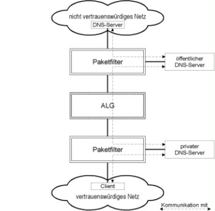
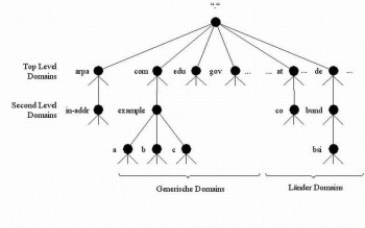
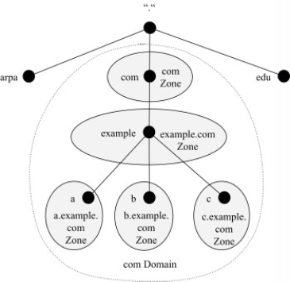

Diese Umsetzungshinweise decken die grundsätzlichen Sicherheitseigenschaften des Domain Name System (DNS) und der hierfür benötigten Server ab. DNS ist ein Netzdienst, der dazu eingesetzt wird, Hostnamen von IT-Systemen in IP-Adressen umzuwandeln. Üblicherweise wird zu einem Hostnamen die entsprechende IP-Adresse gesucht (Vorwärtsauflösung). Ist hingegen die IP-Adresse bekannt und der Hostname wird gesucht, wird dies als Rückwärtsauflösung bezeichnet. Die Bezeichnung DNS-Server steht im eigentlichen Sinne für die verwendete Software, wird jedoch meist auch als Synonym für den Rechner benutzt, auf dem diese Software betrieben wird.
DNS-Server können nach ihren Aufgaben unterschieden werden, dabei gibt es grundsätzlich zwei verschiedenen Typen: Advertising DNS-Server und Resolving DNS-Server. Advertising DNS-Server sind üblicherweise dafür zuständig, Anfragen aus dem Internet zu verarbeiten. Resolving DNS-Server hingegen verarbeiten Anfragen aus dem internen Netz.
Ein Ausfall eines DNS-Servers kann sich gravierend auf den Betrieb einer IT-Infrastruktur auswirken. Dabei ist nicht direkt das ausgefallene DNS-System problematisch, sondern die daraus resultierende Einschränkung DNS-basierter Dienste. Unter Umständen sind Webserver, E-Mail-Server nicht mehr erreichbar und die Fernwartung funktioniert nicht mehr. Da DNS von sehr vielen Netzanwendungen benötigt wird, müssen laut Spezifikation (RFC 1034) mindestens zwei autoritative DNS-Server (Advertising DNS-Server) für jede Zone betrieben werden.
Da eine funktionierende Namensauflösung eine Grundvoraussetzung für viele Anwendungen und damit für einen reibungslosen Betrieb ist, sollten DNS-Server sorgfältig geplant, umgesetzt und fachgerecht betrieben werden. Deshalb liegt der Fokus dieser Umsetzungshinweise auf der Verfügbarkeit von DNS-Servern und der Integrität der übertragenen Informationen sowie auf Problemen, die im Zuge eines DNS-Server-Betriebs auftreten können.
1.2 Lebenszyklus
Planung und Konzeption
Bevor ein DNS-Server ausgewählt und die Infrastruktur geplant wird, sollte geprüft werden, ob der gewünschte Domainname im Besitz der Institution bzw. noch verfügbar ist (siehe APP.3.6.M8 Verwaltung von Domainnamen). Soll DNS Security Extensions (DNSSEC) eingesetzt werden, sollte die Maßnahme APP.3.6.M17 Einsatz von DNSSEC umgesetzt werden. Bei der Planung wird festgelegt, wie die DNS-Server in die Netzinfrastruktur des Informationsverbunds integriert werden (siehe APP.3.6.M1 Planung des DNS-Einsatzes). Im Weiteren sollte entschieden werden, wie hoch die Leistungskapazität eines DNS-Servers sein muss. Das betrifft einerseits das IT-System selbst und andererseits die Übertragungskapazität der Netzanbindung (siehe APP.3.6.M11 Ausreichende Dimensionierung der DNS-Server).
Beschaffung
Es gibt unterschiedliche Softwareprodukte im Bereich der DNS-Server. Um eine geeignete Wahl zu treffen, muss überprüft werden, ob die potenziellen Produkte alle benötigten Funktionen haben und alle Sicherheitsanforderungen mit ihnen erfüllbar sind (siehe APP.3.6.M10 Auswahl eines geeigneten DNS-Server-Produktes).
Umsetzung
Nachdem die Planung abgeschlossen und die Software auf dem Betriebssystem des Servers installiert ist, muss der DNS-Server sicher eingerichtet und konfiguriert werden (siehe APP.3.6.M4 Sichere Grundkonfiguration eines DNS-Servers, APP.3.6.M6 Absicherung von dynamischen DNS-Updates und APP.3.6.M13 Einschränkung der Sichtbarkeit von Domain-Informationen). Darüber hinaus sollten die verantwortlichen Mitarbeiter geschult werden, damit sie mit den für sie relevanten Sicherheitsmaßnahmen ausreichend vertraut sind (siehe APP.3.6.M12 Schulung der Verantwortlichen).
Betrieb
Während des laufenden Betriebs ist es wichtig, sich über aktuelle Sicherheitslücken zu informieren, um eventuell vorhandene Softwareaktualisierungen zu installieren oder anderweitige Sicherheitsvorkehrungen umzusetzen (siehe APP.3.6.M5 Zeitnahes Einspielen sicherheitsrelevanter Patches und Updates). Weiterhin sollte durch Paketfilterregeln die Kommunikation des DNS-Servers mit anderen DNS-Servern und Clients auf ein Minimum beschränkt werden (siehe APP.3.6.M16 Integration eines DNS-Servers in eine "P-A-P"-Struktur). Um einen reibungslosen Betrieb zu gewährleisten und eventuelle Störungen oder Anomalien festzustellen, ist es notwendig den DNS-Server laufend zu überwachen und dessen Protokolldaten regelmäßig auszuwerten (siehe APP.3.6.M7 Überwachung von DNS-Servern und APP.3.6.M15 Auswertung der Logdaten).
Wenn ein DNS-Server konfiguriert wird oder die DNS-Informationen manuell geändert werden, sollten vorher die Domain-Informationen gesichert werden, um sie, falls erforderlich, wieder zurückspielen zu können.
Aussonderung
Werden DNS-Server außer Betrieb gesetzt, sollten diese geregelt entsorgt werden (siehe APP.3.6.M19 Aussonderung von DNS-Servern).
Notfallvorsorge
Im Rahmen der Notfallvorsorge sollten Notfallpläne für die relevanten Gefährdungslagen erstellt werden (siehe APP.3.6.M9 Erstellen eines Notfallplans für DNS-Server). Außerdem müssen Advertising DNS-Server redundant ausgelegt werden (siehe APP.3.6.M2 Einsatz redundanter DNS-Server).
2 Maßnahmen
Im Folgenden sind spezifische Umsetzungshinweise im Bereich "DNS-Server" aufgeführt.
2.1 Basis-Maßnahmen
Die folgenden Maßnahmen sollten vorrangig umgesetzt werden:
APP.3.6.M1 Planung des DNS-Einsatzes
Um DNS-Server sicher umzusetzen, muss eine angemessene Planung im Vorfeld stattfinden. Hierzu ist zunächst ein Konzept zu erstellen, das unter anderem beschreibt, wie DNS aufgebaut werden soll und welche Domain-Informationen schützenswert sind. Hierbei sollten die Verantwortlichen auch festlegen, wie DNS in das Netz des Informationsverbundes eingebunden werden soll. Es sind jedoch nicht nur Aspekte zu planen, die direkt mit dem Begriff Sicherheit verknüpft sind, sondern darüber hinaus auch normale betriebliche Gesichtspunkte, die Anforderungen im Bereich der Sicherheit nach sich ziehen können.
APP.3.6.M2 Einsatz redundanter DNS-Server
Um eine hohe Ausfallsicherheit zu gewährleisten, muss auf eine ausreichende Hardware-Redundanz geachtet werden. Deswegen sollte es immer mindestens zwei getrennte Advertising DNS-Server geben. Die Ausfallsicherheit lässt sich weiter erhöhen, wenn die Server räumlich getrennt werden.
APP.3.6.M3 Verwendung von separaten DNS-Servern für interne und externe Anfragen
Advertising und Resolving DNS-Server übernehmen unterschiedliche Aufgaben und sollten daher auch unbedingt getrennt werden. Es empfiehlt sich daher für Advertising und für Resolving DNS-Server jeweils eigene physische Server einzusetzen. Der Advertising DNS-Server verwaltet die von außen verfügbaren Domain-Informationen und unterstützt nur iterative Anfragen, der Resolving DNS-Server verwaltet die nach innen sichtbaren Informationen und unterstützt sowohl iterative als auch rekursive Anfragen.
Clientanwendungen benötigen einen Resolver, um DNS zu nutzen. Dieser ist standardmäßig in den gängigen Betriebssystemen integriert. Es muss jedoch sicher gestellt werden, dass die Resolver der internen IT-Systeme die internen Resolving DNS-Server zur Namensauflösung verwenden. Sie sollten auf keinen Fall standardmäßig externe DNS-Server befragen. Zusätzlich sollten im Zuge dessen auch die DNS-Suffixe, die von den Resolvern verwendet werden, festgelegt werden, beispielsweise bsi.bund.de. Dadurch wird bei der Namensauflösung von hostx automatisch der Rest des Domainnamens zum Fully Qualified Domain Name (FQDN) hostx.bsi.bund.de ergänzt.
APP.3.6.M4 Sichere Grundkonfiguration eines DNS-Servers
-Server stellen attraktive Ziele für Angreifer dar. Wenn sie es schaffen, diese Server zu manipulieren, können dadurch alle Dienste beeinflusst werden, die DNS verwenden, zum Beispiel Webserver, E-Mail-Server oder Remote-Administrationsanwendungen. Deshalb ist eine sorgfältige Grundkonfiguration der DNS-Server unerlässlich.
DNS-Server-Version
Die Version des verwendeten DNS-Server-Produktes kann einem Angreifer wertvolle Informationen liefern. Daher sollte die Versionsnummer verborgen werden, beispielsweise indem sie durch unknown ersetzt wird. Diese Maßnahme erhöht zwar nicht direkt das Sicherheitsniveau eines DNS-Servers, erschwert einem Angreifer aber die Informationsbeschaffung.
Anfragen
Eine erhöhte Gefahr durch Cache-Poisoning-Angriffe besteht dann, wenn DNS-Server bedingungslos Anfragen akzeptieren. Daher ist es wichtig einzuschränken, welche Anfragen akzeptiert werden.
Resolving DNS-Server sind für Anfragen von Resolvern aus dem Netz der Institution zuständig, in der Regel handelt es sich dabei um rekursive Anfragen. Das bedeutet, dass Resolving DNS-Server rekursive Anfragen aus dem internen Netz akzeptieren müssen. Anfragen aus dem Internet dürfen nicht akzeptiert werden, da hierfür der Advertising DNS-Server zuständig ist.
Anfragen mit Ursprung aus dem Internet müssen immer iterativ behandelt werden, dadurch liefert der Advertising DNS-Server nur Informationen über seine verwalteten Zonen und kann keine gefälschten Antworten versenden.
Um das Sicherheitsniveau von Resolving DNS-Servern zu erhöhen, muss ein weiterer Mechanismus eingesetzt werden. Wie bereits erwähnt, müssen Resolving DNS-Server rekursive Anfragen von institutionsinternen IT-Systemen akzeptieren. Resolving DNS-Server werden also zwangsläufig Namen auflösen müssen, für die sie nicht autoritativ sind. Ein Angreifer könnte hier gefälschte Antworten einschleusen. Die Zuordnung von Antworten zu Anfragen erfolgt über:
IP-Adresse
ID der Anfrage (Zufallszahl)
Source Port der Anfrage
Da IP-Adresse und ID zu wenig Schutz bieten, sind zusätzlich zufällige Source Ports zu verwenden, wenn Anfragen versendet werden. Aktuell wird auch dazu übergegangen, mehrere IP-Adressen für Resolving DNS-Server zu konfigurieren und diese zu randomisieren.
Zonentransfers
Grund und Ziel von Zonentransfers ist, Primary DNS-Server und Secondary DNS-Server miteinander zu synchronisieren. Der Primary DNS-Server liest die Domain-Informationen aus den Zonendateien aus, über einen Zonentransfer gelangen diese auf den oder die Secondary DNS-Server und werden somit synchron gehalten. Es muss sicher gestellt werden, dass der Zonentransfer zwischen dem Primary und dem Secondary DNS-Server auch wirklich funktioniert.
Um zu verhindern, dass unberechtigte Personen einen Zonentransfer starten und somit die gesamten Domain-Informationen einer Zone erhalten, müssen Zonentransfers so konfiguriert werden, dass diese nur zwischen Primary und Secondary DNS-Servern möglich sind. Dies muss zumindest über die Beschränkung auf die IP-Adressen der DNS-Server erfolgen, noch sicherer ist es Transaction Signatures (siehe APP.3.6.M18 Erweiterte Absicherung von Zonentransfers) zu verwenden.
Die Einschränkungen über IP-Adressen sehen wie folgt aus: Am Primary DNS-Server muss für jede Zone konfiguriert werden, welche die dazu gehörenden Secondary DNS-Server sind. Dies erfolgt über die Angabe einer oder mehrerer IP-Adressen. Auf dem oder den Secondary DNS-Servern für eine Zone muss konfiguriert werden, welcher der dafür zuständige Primary DNS-Server ist.
Um zu gewährleisten, dass der Zonentransfer funktioniert, sollte nach jeder Änderung an den Einstellungen für den Zonentransfer die einwandfreie Funktion überprüft werden. Dazu kann beispielsweise ein Zonentransfer durchgeführt werden. Danach wird in den Logdateien überprüft, ob Fehler aufgetreten sind. Bei nicht allzu umfangreichen Zonen ist es möglich, die vom Primary DNS-Server verwalteten Domain-Informationen händisch mit denen des Secondary DNS-Servers zu vergleichen.
Ausschließen bestimmter DNS-Server
Sind DNS-Server bekannt, die falsche Domain-Informationen liefern, muss verhindert werden, dass die Resolving DNS-Server der Institution, Anfragen an diese DNS-Server senden. Werden private IP-Netze wie 10/8, 172.16/12 und 192.168/16 in der Institution nicht genutzt, sollten aus Sicherheitsgründen Anfragen aus diesen Netzen ignoriert werden.
APP.3.6.M5 Zeitnahes Einspielen sicherheitsrelevanter Patches und Updates
Die Verantwortlichen müssen sich über aktuelle Sicherheitslücken in der eingesetzten Software frühzeitig informieren. Idealerweise sollten hierzu mindestens zwei verschiedene Informationsquellen, darunter auch eine herstellerunabhängige genutzt werden. Unter können beispielsweise alle bisher publizierten Schwachstellen im DNS-Server-Produkt BIND nachgelesen werden.
Bei Produkten, für die vom Hersteller (noch) keine Sicherheitspatches verfügbar sind, muss rechtzeitig geprüft werden, ob es noch zu verantworten ist, sie einzusetzen. Auch muss dann geprüft werden, welche zusätzlichen Maßnahmen umgesetzt werden können, um die betroffenen Systeme trotzdem zu schützen.
Bevor Updates oder Patches installiert werden, ist stets eine Datensicherung des Systems zu erstellen, die es ermöglicht, den Originalzustand wieder herzustellen, falls Probleme auftreten. Vorab muss auf einem Testsystem überprüft werden, ob die Sicherheitsupdates kompatibel sind und keine Fehler verursachen.
Es sollte dokumentiert werden, wann, von wem und aus welchem Anlass Patches und Updates eingespielt wurden. Aus der Dokumentation muss sich der aktuelle Patchlevel des Systems jederzeit schnell ermitteln lassen. So können sich die Verantwortlichen schnell darüber klar werden, ob eine neue Schwachstelle auch die eigenen Systeme gefährdet.
APP.3.6.M6 Absicherung von dynamischen DNS-Updates
Um dynamische Updates sicher nutzen zu können, muss gewährleistet sein, dass nur legitimierte IT-Systeme Änderungen an Domain-Informationen vornehmen können. Des Weiteren muss festgelegt werden, welche Domain-Informationen die einzelnen IT-Systeme ändern dürfen. Um sicherzustellen, dass Domain-Informationen nicht von unautorisierten IT-Systemen mithilfe von dynamischen Updates manipuliert werden, stehen zwei Möglichkeiten zur Verfügung:
Beschränkung der berechtigten Hosts mittels IP-Adressen,
Beschränkung der berechtigten Hosts mithilfe von TSIG (siehe APP.3.6.M18 Erweiterte Absicherung von Zonentransfers).
Bei der Beschränkung mittels IP-Adresse wird über die IP-Adresse die Quelle des dynamischen Updates identifiziert. Bei TSIG wird symmetrische Verschlüsselung benutzt, um die Quelle des dynamischen Updates zu identifizieren.
Neben der Anfälligkeit für IP-Spoofing gibt es bei der Verwendung von IP-Adressen ein weiteres Problem. Secondary DNS-Server können als Forwarder für dynamische Updates eingerichtet und der Primary DNS-Server so konfiguriert werden, dass er nur Updates von den Secondary DNS-Servern akzeptiert. Weil nur auf den Secondary DNS-Servern konfiguriert wird, von welchen IT-Systemen Updates akzeptiert werden, bleibt es dem Primary DNS-Server verborgen, woher die Updates stammen. Somit ist es nicht möglich, aufgrund der originalen Quelle einzuschränken, welche Hosts dynamische DNS-Updates vornehmen dürfen.
Neben der Identifikation der Quelle muss konfiguriert werden, welche Domain-Informationen verändert werden dürfen. Die Regeln müssen so konfiguriert werden, dass dynamische Updates reibungslos einsetzbar sind. Ein DHCP-Server benötigt beispielsweise die Berechtigung, die Zuordnung von Domainnamen und IP-Adressen zu ändern, jedoch besteht kein Grund einem DHCP-Server zu erlauben, den zuständigen DNS-Server für eine Zone zu ändern.
APP.3.6.M7 Überwachung von DNS-Servern
Um die Sicherheit eines DNS-Servers auch im Betrieb aufrecht zu erhalten, reicht es nicht aus, sich nur auf eine sorgfältige Planung und Anfangskonfiguration zu verlassen. Es müssen eine Reihe von Maßnahmen durchgeführt werden, um eventuelle Probleme und sicherheitskritische Lücken aufzudecken.
Die Kapazitätsanforderungen sollten bereits in der Planung festgelegt werden. Aufgrund der Tatsache, dass die Kapazitätsanforderungen von der
Größe der Zone(n),
Anzahl der Anfragen,
Anzahl der rekursiven Anfragen,
Anzahl der Zonentransfers,
Anzahl der dynamischen Updates etc.
abhängen, ist es schwierig die benötigten Kapazitäten zu planen. Daher muss regelmäßig überwacht werden, wie ausgelastet ein DNS-Server ist, um falls erforderlich die Leistungskapazität der Hardware anzupassen. Des Weiteren kann eine erhöhte Auslastung ein Indikator für einen laufenden Angriff sein. Die Kommunikation des DNS-Servers ist daher geeignet zu protokollieren. Die Protokollierung sollte beispielsweise die Anzahl der Anfragen, Zonentransfers, dynamische Updates etc. umfassen (siehe OPS.1.1.7 Protokollierung).
APP.3.6.M8 Verwaltung von Domainnamen[Leiter IT]
Internet-Domainnamen (kurz: Domains) müssen bei Registrierungsstellen (Registraren) angemeldet werden. Eine Registrierungsstelle kann Namen für eine oder mehrere sogenannte Top-Level-Domains vergeben, z. B. die klassischen Domains .com, .org, .gov und die diversen Länder-Domains wie .de für Deutschland, .at für Österreich und .ch für die Schweiz. Domains werden jeweils für einen bestimmten Zeitraum registriert. Ist dieser Zeitraum abgelaufen, so muss die Registrierung gegen Zahlung einer Gebühr verlängert werden. Wird vergessen, eine Registrierung zu verlängern, kann das unangenehme Folgen haben. Es muss daher sichergestellt sein, dass die Registrierungen für alle Domains, die von einer Institution benutzt werden, regelmäßig und rechtzeitig verlängert werden. Dazu sollte in jeder Institution eine Stelle festgelegt werden, die die Verwaltung der Domainnamen bei den verschiedenen Registrierungsstellen koordiniert.
Für mehrere Top-Level-Domains (etwa .com und .org) gibt es verschiedene Registrierungsstellen. Ein Wechsel der Registrierungsstelle ist jederzeit möglich, aber meist mit Kosten verbunden. Es ist wichtig, für alle registrierten Domains einen Überblick über die jeweilige Laufzeit der Registrierung und den Preis für die Verlängerung zu haben, um eine rechtzeitige Verlängerung der Registrierung sicherzustellen.
Verhinderung von Domain-Grabbing
Wenn eine Institution ihre Domains nicht selbst registriert und verwaltet, sondern dies über einen Internetdienstleister abwickelt, muss sie bei der Vertragsgestaltung darauf achten, die Kontrolle über ihre Domains zu behalten. Das kann beispielsweise bei einem eventuellen Wechsel des Registrars oder bei der Auflösung von Namensstreitigkeiten wichtig sein.
Bei Fehlern und Versäumnissen des Dienstleisters bei der Verwaltung von Domainnamen müssen entsprechende Regelungen getroffen werden, da in solchen Fällen erheblicher Schaden entstehen kann.
Falls die Nameserver nicht in der Institution selbst betrieben, sondern bei einem Dienstleister gehostet werden, sollten in den Service-Level-Agreements insbesondere Anforderungen an die Verfügbarkeit der Nameserver und an die Bearbeitungszeiten für Änderungen im DNS der Institution definiert werden.
APP.3.6.M9 Erstellen eines Notfallplans für DNS-Server
Fällt der Netzdienst DNS in einem Informationsverbund aus, wirkt sich das gravierend auf den Betrieb der IT-Infrastruktur aus. Dabei ist nicht direkt das ausgefallene DNS-Systems problematisch, sondern die daraus resultierende Einschränkung DNS-basierter Dienste. Unter Umständen sind Webserver nicht mehr erreichbar und die Fernwartung funktioniert nicht mehr.
Je nachdem welche DNS-Server ausfallen, funktioniert die Namensauflösung innerhalb der Institution und/oder von außerhalb nicht mehr. Funktioniert die Namensauflösung von außerhalb nicht mehr, wird dies meistens schnell öffentlich bekannt werden, was bei regelmäßigen oder längeren Ausfällen einen Imageschaden zur Folge haben kann.
Es ist daher ein Konzept zu entwerfen, wie bei einem Ausfall die daraus resultierenden Folgen minimiert werden können. Darin sollten folgende Aspekte berücksichtigt werden:
Die Notfallplanung für DNS-Server muss in den existierenden Notfallplan integriert werden.
Ein Systemausfall kann zu Datenverlusten führen. Daher ist ein Datensicherungskonzept für die Zonendateien zu erstellen. Dieses ist in das existierende Datensicherungskonzept zu integrieren.
Neben dem Notfallplan für den DNS-Server muss auch für das darunter liegende Betriebssystem ein Notfallplan existieren.
Für den Betrieb eines DNS-Servers für Anfragen aus dem Internet wird eine funktionierende Internetanbindung vorausgesetzt.
Die Systemkonfiguration ist zu dokumentieren. Wichtige Aufgaben müssen so beschrieben sein, dass das Gesamtsystem im Notfall von IT-Angestellten auch ohne vorherige Kenntnis dieser Systemkonfiguration wiederhergestellt werden kann.
War die Störung das Resultat eines Angriffs, muss die Schwachstelle behoben und dokumentiert werden.
Es muss ein Wiederanlaufplan erstellt werden, damit das oder die IT-System(e) wieder geregelt hochgefahren werden kann/können.
2.2 Standard-Maßnahmen
Gemeinsam mit den Basis-Maßnahmen entsprechen die folgenden Maßnahmen dem Stand der Technik im Bereich "DNS-Server".
APP.3.6.M10 Auswahl eines geeigneten DNS-Server-Produktes
DNS-Server-Produkte unterscheiden sich hinsichtlich ihres Leistungsumfangs und des Bedienkomforts. Wenn ein solches Produkt beschafft wird, sollte auf folgende Aspekte geachtet werden:
Das DNS-Server-Produkt sollte sich in der Praxis bereits bewährt haben.
Falls für ein bestimmtes Produkt bereits genügend geschultes Personal vorhanden ist und alle Anforderungen an die Funktionalität erfüllt sind, sollte dieses DNS-Server-Produkt verwendet werden.
Es gibt DNS-Server-Produkte deren Implementierung von den Standards zu DNS (RFC 1034, 1035 etc.) abweicht. Ist geplant, verschiedene DNS-Server-Produkte zu benutzen, um z. B. Softwaremonokulturen zu vermeiden, sollte dies nur nach einer Kompatibilitätsprüfung gemacht werden.
Für den Fall, dass DNSSEC eingesetzt wird, muss darauf geachtet werden, dass dies vom DNS-Server-Produkt unterstützt wird.
Sofern die Master Files händisch editiert werden, sollte toolgestützt überprüfbar sein, ob die Zonendatei syntaktisch korrekt ist.
APP.3.6.M11 Ausreichende Dimensionierung der DNS-Server
Die Hardware, auf der ein DNS-Server betrieben werden soll, beeinflusst die Gesamtleistung des entstehenden Systems entscheidend. Dabei sollte auch bedacht werden, wie viele Anfragen ein DNS-Server durchschnittlich bedienen muss, ob es sich um einen Resolving DNS-Server handelt, der rekursive Anfragen akzeptiert oder ob es sich um einen Advertising DNS-Server handelt, der nur iterative Anfragen akzeptiert und ob DNSSEC eingesetzt werden soll.
Für DNS-Server ist ein ausreichender Hauptspeicher wichtig, dadurch wird verhindert, dass der Server Speicherinhalte auf die Festplatte auslagern muss und somit die Antwortzeiten steigen. Wird DNSSEC eingesetzt, ist es wichtig darauf zu achten, dass die Prozessorleistung entsprechend erhöht wird, um einen angemessenen Durchsatz bei kryptografischen Operationen aufrecht zu erhalten. Die ausgewählten Kapazitäten für Hauptspeicher und Prozessorleistung müssen im regulären Betrieb überprüft werden, da die tatsächlich benötigten Kapazitäten erst hier genau ermittelt werden können.
Um zu vermeiden, dass fremde Prozesse den DNS-Server beeinflussen, sollte auf der verwendeten Hardware ausschließlich der DNS-Server betrieben werden. Um Distributed-Denial-of-Service-Angriffe abwehren zu können, sollten DNS-Server über eine breitbandige und robuste Netzanbindung verfügen.
APP.3.6.M12 Schulung der Verantwortlichen[Leiter IT, Vorgesetzte]
Um einen DNS-Server korrekt und sicher administrieren zu können, müssen die verantwortlichen Mitarbeiter entsprechend geschult werden. Bereits kleine Konfigurationsfehler können dazu führen, dass sicherheitskritische Schwachstellen entstehen. Besonders solides Fachwissen ist erforderlich, wenn der Einsatz von DNS-Servern geplant wird und die Kommunikation auf legitime Teilnehmer eingeschränkt werden soll.
Neben den Aspekten der allgemeinen Betriebssystemsicherheit sind folgende Punkte von Bedeutung:
Installation eines DNS-Servers
Möglichkeiten DNS-Server in den Startprozess des Betriebssystems einzubinden
Einführung in mögliche Gefährdungen
Entwicklung eines Rechtekonzepts, sowohl für die Konfigurationsrechte durch Administratoren als auch für die Rechte des DNS-Server-Prozesses
Unterschied zwischen Advertising und Resolving DNS-Server
Konfiguration des DNS-Servers
Mechanismen zur Absicherung von Anfragen
Mechanismen zur Absicherung von Zonentransfers
Mechanismen zur Absicherung von dynamischen Updates
Einsatzmöglichkeiten und Konfiguration von DNSSEC
Mechanismen zur Sicherstellung der Verfügbarkeit von DNS-Servern
Mechanismen zur Sicherung der Zoneninformationen
Für Schulungen und Weiterbildungen sollte die Institution ein ausreichendes Budget einplanen.
APP.3.6.M13 Einschränkung der Sichtbarkeit von Domain-Informationen
Die Hauptfunktion von DNS ist es, Namen und IP-Adressen aufzulösen. Um diese Anforderungen erfüllen zu können, speichern DNS-Server unter anderem die Zuordnung von Namen und IP-Adressen sämtlicher Rechner und Netzkomponenten. Ein Teil dieser Informationen muss veröffentlicht werden, z. B. DNS-Server, Webserver, Mailserver, Fileserver, VPN-Verbindungspunkte. Wären diese Domain-Informationen nicht öffentlich zugänglich, könnte keine Verbindung mit Domainnamen über das Internet zu diesen Servern aufgebaut werden.
Domain-Informationen über interne Rechner und Netzkomponenten hingegen sind meistens nicht für die Öffentlichkeit bestimmt und sollten daher institutionsintern bleiben. Da Domain-Informationen oft etwas über die Funktion bzw. den Standort der betreffenden IT-Komponente aussagen, wird von DNS Information Leakage gesprochen, wenn diese Informationen veröffentlicht werden. Die Veröffentlichung selbst stellt für den Informationsverbund keinen direkten Schaden dar. Die gewonnenen Domain-Informationen können jedoch zur Vorbereitung eines Angriffs auf den Informationsverbund genutzt werden. Ein Angreifer kann sich einen Überblick über das Netz, die sicherheitsrelevanten Komponenten und die lohnenden Ziele verschaffen.
Der Namensraum eines Informationsverbundes sollte in einen öffentlichen und einen institutionsinternen Bereich aufgeteilt werden. Im öffentlichen Teil sollten nur solche Domain-Informationen (in der Regel IP-Adresse und Hostname) enthalten sein, damit Dienste, die von extern erreichbar sein sollen, reibungslos funktionieren.
Innerhalb der Institution muss die Sichtbarkeit der Informationen meist nicht eingeschränkt werden. Welche Domain-Informationen nach außen hin sichtbar sind und welche nicht, sollte bei der Planung des DNS-Einsatzes berücksichtigt werden.
APP.3.6.M14 Platzierung der Nameserver
Zur Sicherstellung einer ausreichenden Verfügbarkeit bei Leitungsstörungen sollten externe DNS-Server redundant angebunden sein und in unterschiedlichen Netzsegmenten angeschlossen werden. Darüber hinaus sollten sie nicht an dasselbe Netzkoppelelement angeschlossen werden. Somit wird durch Ausfall eines IP-Subnetzes oder eines Netzkoppelelements die Verfügbarkeit der Namensauflösung nicht beeinträchtigt.
Wohin ein DNS-Server platziert wird, hängt letztlich von der Netzinfrastruktur der jeweiligen Institution ab. Es gibt jedoch einige Grundregeln, die eingehalten werden sollten:
Primary und Secondary DNS-Server sollten in verschiedenen IP-Subnetzen platziert werden. Des Weiteren sollten sie nicht an dasselbe Netzkoppelelement angeschlossen werden. Dadurch ist die Namensauflösung sichergestellt, auch wenn ein IP-Subnetz oder ein Netzkoppelelement ausfällt.
Advertising DNS-Server sollten in der demilitarisierten Zone (DMZ) platziert werden. Weitere Hinweise hierzu finden sich im Baustein NET.1.1 Netzarchitektur und -design.
Resolving DNS-Server sind für Anfragen von institutionsinternen IT-Systemen zuständig. Sie sollten daher innerhalb des vertrauenswürdigen Netzes der Institution so nah wie möglich bei den anfragenden IT-Systemen platziert werden, um lange Antwortzeiten und unnötige Netzbelastung zu vermeiden. Darüber hinaus dürfen Resolving DNS-Server nicht von externen IT-Systemen erreichbar sein.
Wird die Sichtbarkeit der Informationen eingeschränkt, sollte der öffentliche Teil der Domain-Informationen vom Advertising DNS-Server in der DMZ verwaltet werden.
Wird für die internen Nameserver ein Forwarder für die Auflösung des Internet-Domainnamensraums verwendet, so sollte dieser nicht im internen Netz platziert werden.
Werden Caching-Only DNS-Server im firmeninternen Netz eingesetzt, sollten die Resolver auf den Clients keine Domain-Informationen zwischenspeichern. Das Zwischenspeichern übernimmt der Caching-Only DNS-Server. Durch den zentralen Speicher wird die Anzahl der Anfragen minimiert. Des Weiteren kann bei einem erfolgreichen Cache-Poisoning-Angriff der zentrale Cache des Caching-Only DNS-Servers einfach gelöscht werden, um die gefälschten Daten zu entfernen.
Um DNS-Netzverkehr zu akzeptieren, müssen auf der Firewall entsprechende Regeln eingerichtet werden (siehe APP.3.6.M16 Integration eines DNS-Servers in eine "P-A-P"-Struktur). Bei der Planung sollte darauf geachtet werden, dass möglichst wenige Routen und Ports geöffnet werden müssen.
APP.3.6.M15 Auswertung der Logdaten
Die Logdateien des DNS-Servers sowie des unterliegenden Betriebssystems sollten regelmäßig überprüft und ausgewertet werden. Unregelmäßigkeiten in den Logdateien, die Hinweise auf mögliche Probleme sein können, sind beispielsweise:
häufige Anfragen bezüglich Domainnamen, die nicht existieren,
häufige unerlaubte rekursive Anfragen.
Unregelmäßigkeiten müssen aber nicht unbedingt Hinweise darauf sein, dass der Server kompromittiert ist. Oft treten sie auch aufgrund fehlerhafter Einstellungen auf.
APP.3.6.M16 Integration eines DNS-Servers in eine "P-A-P"-Struktur
Gerade DNS-Server-Produkte sind immer wieder eine Quelle für Sicherheitsprobleme. Wegen der besonderen Bedeutung der Domain-Informationen und der erhöhten Anfälligkeit der DNS-Software für Angriffe ist ein besonderer Aufbau notwendig, um Domain-Informationen sicher bereitstellen und nutzen zu können.
Kommunikation durch Paketfilter auf Minimum beschränken
DNS-Server benötigen die nachfolgend aufgeführten Kommunikationskanäle:
Resolving DNS-Server darf auf Port 53 des Advertising DNS-Servers UDP
Advertising DNS-Server darf auf alle Ports des Resolving DNS-Servers UDP (nur bei stateless Firewall nötig)
Resolving DNS-Server darf auf Port 53 seines Forwarders UDP
Forwarder darf auf alle Ports des Resolving DNS-Servers UDP (nur bei stateless Firewall nötig)
Externes Netz darf auf Port 53 des Advertising DNS-Servers UDP
Advertising DNS-Server darf auf alle Ports externer DNS-Server UDP und TCP (nur bei stateless Firewall nötig)
Internes Netz darf auf Port 53 des Resolving DNS-Servers UDP
Resolving DNS-Server darf auf alle Ports des internen Netzes UDP (nur bei stateless Firewall nötig)
Primary DNS-Server darf auf Port 53 seiner Secondary DNS-Server UDP und TCP
Secondary DNS-Server darf auf Port 53 seines Primary DNS-Server UDP und TCP
Werden nur diese Regeln implementiert, kann nur beschränkt aus dem Internet auf den freigegebenen Diensten kommuniziert werden. Können die Kommunikationspartner noch weiter eingeschränkt werden, so kann ein Angreifer gar keine direkte Verbindung zum Internet-Server aufbauen.
Hinweis: Obige Regeln können bewirken, dass der DNS-Server nicht von jedem Rechner aus erreicht werden kann, da ICMP nicht durchgelassen wird. Deshalb empfiehlt es sich, den ICMP Subtype icmp unreachable vom Internet hin zum Internet-Server durchzulassen.
DNS-Server in einer "P-A-P"-Struktur
Um DNS sicher in eine "P-A-P"-Struktur zu integrieren, bietet sich der in Abbildung 1 gezeigte Aufbau an, bei dem keine direkte Verbindung zwischen einem Client im vertrauenswürdigen Netz und einem DNS-Server im nicht-vertrauenswürdigen Netz (und umgekehrt) stattfindet. Es werden zwei getrennte DNS-Server eingesetzt.

Abbildung: Abbildung: DNS-Server in einer "P-A-P"-Struktur
Der Advertising DNS-Server, der die extern verfügbaren Informationen enthält, wird in einer DMZ des äußeren Paketfilters angesiedelt. Er ist als Primary DNS-Server für die Domain des vertrauenswürdigen Netzes eingerichtet und enthält nur die unbedingt notwendigen Informationen, beispielsweise:
Name und IP-Adresse des externen Mailservers (MX-Eintrag)
Namen und Adressen von Informationsservern, die Informationen für die Öffentlichkeit anbieten. Dabei muss zwischen den Servern, die vor dem Application Level Gateway (ALG) angesiedelt sind und denen, die hinter dem ALG angesiedelt sind, unterschieden werden. Bei Ersteren muss die Adresse des Servers selbst eingetragen sein, bei Letzteren die Adresse des ALG.
Der Resolving DNS-Server wird in einer DMZ des inneren Paketfilters aufgestellt. Er enthält die Informationen über die Rechner des internen Netzes. Für Rechner des internen Netzes wird der Resolving DNS-Server als DNS-Server eingetragen: Alle Clients des vertrauenswürdigen Netzes nutzen ausschließlich den Resolving DNS-Server, bei Unix-Rechnern beispielsweise mittels Einträgen in der Datei /etc/resolv.conf. Benötigt ein Client im vertrauenswürdigen Netz eine Domain-Information aus dem nicht-vertrauenswürdigen Netz, so stellt er die Anfrage an den Resolving DNS-Server. Als "Forwarder" nutzt dieser einen öffentlichen DNS-Server (oder einen extra eingerichteten Forwarder) für Anfragen, die externe Namen betreffen. Der direkte Zugriff auf den Resolving DNS-Server aus dem nicht-vertrauenswürdigen Netz sollte durch Paketfilterregeln unterbunden werden, sodass die Domain-Informationen des vertrauenswürdigen Netzes nur im vertrauenswürdigen Netz sichtbar sind.
Der eingesetzte Paketfilter muss so konfiguriert werden, dass zwischen den DNS-Servern nur der DNS-Dienst gestattet ist, d. h. Port 53 als (je nach betrachteter Richtung) Quell- bzw. Zielport. Vom Advertising DNS-Server sollten keinerlei Verbindungen ins interne Netz zugelassen werden. Der Server sollte nur über entsprechend abgesicherte Verbindungen (z. B. SSH-2) administriert werden.
In Tabelle 1 wird eine mögliche Konfiguration für Zugriffsregelungen beschrieben, die über entsprechende Paketfilterregeln umgesetzt werden kann. Dabei wird davon ausgegangen, dass die Server über eine SSH-Verbindung aus dem internen Netz administriert werden und dass für DNS als Trägerprotokoll UDP verwendet wird. Protokolldaten werden über Syslog auf einen Logserver übertragen.
Quelle
Ziel
Entscheidung
Bemerkungen
Kommunikation des öffentlichen DNS-Servers mit dem Internet
Externes Netz
Advertising DNS-Server Port 53
erlauben
DNS-Anfragen und Antworten aus dem öffentlichen Netz
Externes Netz
andere Ports des Advertising DNS-Servers
verbieten
Advertising DNS-Server
DNS-Server im Internet, alle Ports und UDP
erlauben
Auflösung von externen Namen durch den DNS-Server
Kommunikation des externen DNS-Servers mit dem internen Netz
Advertising DNS-Server
Alle Verbindungen ins interne Netz
verbieten
Internes Netz (ggfs. Einschränkung auf Administrationsnetz)
Advertising DNS-Server Port 22 (SSH)
erlauben
Administration und Datenübertragung erfolgen per SSH und SCP
Internes Netz
Alle anderen Zugriffe auf den Advertising DNS-Server
verbieten
DNS-Anfragen aus dem internen Netz erfolgen über den internen Server
Kommunikation der beiden DNS-Server untereinander
Resolving DNS-Server
Advertising DNS-Server UDP Port 53
erlauben
Der Resolving DNS-Server leitet Anfragen an den Advertising Server weiter (falls erforderlich kann ein eigener Forwarder eingerichtet werden)
Advertising DNS-Server
Resolving DNS-Serveralle Ports UDP
erlauben
Kommunikation des internen DNS-Servers mit dem internen Netz
Internes Netz
Resolving DNS-Server UDP Port 53
erlauben
DNS-Anfragen aus dem internen Netz erfolgen über den Resolving DNS-Server
Resolving DNS-ServerUDP Port 53
Internes Netz
erlauben
DNS-Antworten in das interne Netz
Resolving DNS-Serversonstige Quellports
Internes Netz
verbieten
Internes Netz (falls erforderlich Einschränkung auf Administrationsnetz)
Resolving DNS-Server Port 22 (SSH)
erlauben
Administration und Datenübertragung erfolgen per SSH und SCP
Protokollierung
Resolving und Advertising DNS-Server
Loghost UDP-Port 514
erlauben
Übertragung der Protokolldaten zum Loghost
Tabelle 1: Konfiguration für Zugriffsregeln
Domain-Registrierung bei externem Dienstleister
Bei dieser Alternative werden wichtige Domain-Informationen bei einem externen Dienstleister gespeichert und nicht durch einen eigenen DNS-Server bereitgestellt. Der Unterschied zu den eben beschriebenen Szenarien besteht im Wesentlichen im Wegfall der Advertising DNS-Server. DNS-Anfragen aus dem externen Netz nach Domain-Informationen aus dem internen Netz werden nicht an den institutionsinternen Advertising DNS-Server, sondern an den DNS-Server des externen Dienstleisters gesendet und von diesem beantwortet. Der Resolving DNS-Server greift bei Anfragen nach externen DNS-Namen oder IP-Adressen direkt über die Firewall hinweg auf einen DNS-Server im externen Netz, meistens betrieben durch den Internet-Provider, zu.
Auch bei dieser Integrationsvariante sollten nur die unbedingt notwendigen Domain-Informationen extern angeboten werden, beispielsweise Name und IP-Adresse des Mailservers und des ALG. Bei besonders unbedenklichen institutionsinternen Nutzern kann der Resolving DNS-Server auch im internen Netz, anstatt in einer DMZ des inneren Paketfilters betrieben werden, was die Administration des Paketfilters etwas erleichtert.
Vorteile dieser Variante sind die geringen Investitionskosten und die geringe Komplexität bei der Integration in eine P-A-P-Struktur.
APP.3.6.M17 Einsatz von DNSSEC
DNSSEC wurde entwickelt, um DNS gegen Angriffe zu schützen, darunter auch Cache-Poisoning-Angriffe. Realisiert wird dies durch asymmetrische Kryptografie. Bei DNSSEC werden die gesamten Zoneninformationen mit einem privaten Schlüssel signiert. Diese Signaturen können mithilfe des zugehörigen öffentlichen Schlüssels geprüft werden. Das Schlüsselpaar wird als Zone-Signing-Key (ZSK) bezeichnet. Stellt ein DNSSEC unterstützender Resolver eine Anfrage an einen DNS-Server, auf dem DNSSEC konfiguriert ist, sendet der Server als Antwort die Domain-Informationen mit den Signaturen zurück. Der Resolver kann mithilfe der Signatur und dem öffentlichen Schlüssel überprüfen, ob die Domain-Informationen korrekt sind.
Um die Authentizität des ZSK sicherzustellen, wird dieser mithilfe von Key-Signing-Keys (KSK) signiert. Ein Hashwert des öffentlichen Teils des KSK wird der übergeordneten Domain übermittelt. Die übergeordnete Domain signiert mithilfe ihrer Schlüssel den Hashwert und bestätigt die Authentizität des Hashwertes. Somit entsteht eine Vertrauenskette (Chain-of-Trust). Setzt die übergeordnete Domain DNSSEC nicht ein, besitzt diese keine Schlüssel und kann keine Signatur erstellen, um die Authentizität der KSK zu bestätigen. Man kann jedoch seine DNS-Server anweisen, den eigenen Schlüsseln zu vertrauen, somit entstehen Vertrauensinseln (Island-of-Trust). Mit höherem Verbreitungsgrad von DNSSEC werden diese Vertrauensinseln größer und somit das Sicherheitsniveau höher. DNSSEC bietet folgende Sicherheitsmechanismen:
Die Quelle der DNS-Informationen wird authentisiert.
Die Integrität der Domain-Informationen wird sichergestellt, somit können Domain-Informationen nicht mehr manipuliert werden, da die Signatur diese Manipulation sichtbar macht. Kunden können beispielsweise sicher sein, mit dem richtigen Webserver oder Mailserver zu kommunizieren.
Existiert ein Domainname nicht, wird eine authentisierte Fehlermeldung gesendet.
Die Schlüssel ZSK und KSK müssen sorgfältig verwaltet und regelmäßig getauscht werden. Da mit den ZSK mehr Datenmaterial signiert wird, sind diese öfter zu tauschen. Je nach Größe der signierten Zonen stellt ein Wechsel im Zeitrahmen von ein bis drei Monaten ein geeignetes Sicherheitsniveau dar. Bei den KSK sollte spätestens nach einem Jahr ein Wechsel erfolgen. Gelangen die KSK und ZSK an die Öffentlichkeit, müssen die Schlüssel umgehend getauscht werden.
Durch DNSSEC und die dadurch nötigen kryptografischen Operationen ist es gegebenenfalls notwendig, die Leistungskapazität von DNS-Servern anzupassen, auch die Rechenleistung muss eventuell erhöht werden. Es muss sichergestellt werden, dass auch bei Lastspitzen die Antwortzeit akzeptabel gehalten wird.
APP.3.6.M18 Erweiterte Absicherung von Zonentransfers
Um ein höheres Schutzniveau zu erreichen, können die Zonentransfers über Transaction Signatures (TSIG) abgesichert werden. Bei TSIG werden auf dem Primary DNS-Server und dem/den Secondary DNS-Server(n) symmetrische Schlüssel definiert. Wird ein Zonentransfer gestartet, erzeugt TSIG aus den Binärdaten der Anfrage mithilfe des symmetrischen Schlüssels und einer Hashfunktion einen Hash Message Authentication Code (HMAC). Der HMAC wird der Anfrage beigefügt. Der Secondary DNS-Server, der den Schlüssel ebenfalls kennt, berechnet den HMAC eigenständig. Stimmen erhaltener und berechneter HMAC überein, wird der Zonentransfer durchgeführt, ansonsten wird dieser abgelehnt. Diese Methode schützt im Gegensatz zur IP-Adressen-basierten Absicherung auch gegen IP-Spoofing. Bei TSIG ist jedoch zu beachten, dass nicht jedes DNS-Server-Produkt über diese Funktion verfügt. Auch können herstellerspezifische Abweichungen bei der jeweiligen Implementierung bestehen.
APP.3.6.M19 Aussonderung von DNS-Servern
Wird entschieden, einen DNS-Server nicht weiter zu betreiben, weil beispielsweise die Domain aufgelöst wird, sind bei dessen Außerdienststellung einige Punkte zu beachten. Der Aussonderungsplan soll unter anderem verhindern, dass Verweise auf nicht mehr existierenden DNS-Server im Domain-Namensraum verbleiben.
Löschen/Entsorgen der Speichermedien
Die Speichermedien aller betroffenen Rechner sollten vor der Wiederverwendung sicher gelöscht werden. Wird die Hardware entsorgt, so sollte dies ebenfalls auf sichere Weise geschehen.
Löschen des DNS-Servers aus dem Domain-Namensraum
Wurde der DNS-Server nicht bei der übergeordneten Domain registriert, müssen keine weiteren Schritte unternommen werden. Ist der DNS-Server jedoch bei der übergeordneten Domain registriert, muss die Aussonderung den Administratoren der übergeordneten Domain bekannt gegeben werden, damit diese in der übergeordneten Domain alle Zoneneinträge der ausgesonderten DNS-Server löschen.
System aus dem Netzverbund löschen
Alle Referenzen auf Netz- und Betriebssystemebene sind zu löschen. Ist der ausgesonderte Server als Standard DNS-Server bei internen Systemen der Institution eingetragen, müssen diese Einträge gelöscht werden. Zonentransfers, die zwischen dem ausgesonderten DNS-Server und noch existierenden DNS-Servern konfiguriert sind, müssen ebenfalls gelöscht werden.
2.3 Maßnahmen für erhöhten Schutzbedarf
Im Folgenden sind Maßnahmenvorschläge aufgeführt, die über das dem Stand der Technik entsprechende Schutzniveau hinausgehen und bei erhöhtem Schutzbedarf in Betracht gezogen werden sollten. Die jeweils in Klammern angegebenen Buchstaben zeigen an, welche Grundwerte durch die Maßnahme vorrangig geschützt werden (C = Vertraulichkeit, I = Integrität, A = Verfügbarkeit).
APP.3.6.M20 Prüfung des Notfallplans auf Durchführbarkeit(A)
Der Notfallplan für DNS-Server muss regelmäßig praktisch getestet werden. Nur so kann sichergestellt werden, dass die in den Wiederanlaufplänen beschriebenen Maßnahmen tatsächlich durchführbar sind. Gleichzeitig lernen die Mitarbeiter in den Übungen die beschriebenen Abläufe kennen und trainieren ihre Umsetzung. Schließlich vermittelt die Übung Erkenntnisse zu den tatsächlichen Wiederherstellungs- und Wiederanlaufzeiten.
APP.3.6.M21 Hidden-Master(CIA)
Eine sogenannte Hidden-Master-Konfiguration stellt sicher, dass der primäre Advertising DNS-Server von außen nicht erreichbar ist und auch in den DNS-Zonen-Daten nicht sichtbar wird. Anfragen werden ausschließlich von mindestens zwei sekundären Advertising DNS-Servern beantwortet, die ihre Daten über eine gesicherte Leitung vom versteckten primären Advertising DNS-Server beziehen.
APP.3.6.M22 Anbindung der DNS-Server über unterschiedliche Provider[Leiter IT](IA)
Bei der Registrierung eines Domainnamens müssen mindestens zwei DNS-Nameserver (Primary und Secondary Nameserver) angegeben werden, die für die Zuordnung von Rechnernamen zu IP-Adressen zuständig sind. Ein Nameserver wird oft vom Internet-Zugangsprovider betrieben, kann aber auch von der Institution selbst betrieben werden. Zur Vorbeugung vor DoS-Angriffen sollten Primary und Secondary Nameserver in verschiedenen Netzen angesiedelt und über unterschiedliche Provider angebunden sein.
3 Weiterführende Informationen
3.1 Wissenswertes
Der Domain Name System (DNS) ist ein Netzdienst, um Hostnamen von IT-Systemen in Computernetzen aufzulösen. Vorwärtsauflösung ist, wenn die IP-Adresse zu einem Hostnamen ermittelt wird. Wird dagegen der Hostname zu einer IP-Adresse ermittelt, wird dies als Rückwärtsauflösung bezeichnet.
Domain-Namensraum
DNS ist eine verteilte Datenbank, die den baumförmigen Domain-Namensraum verwaltet (siehe Abbildung 2). Der Baum besteht aus Knoten und Blättern, die als Label bezeichnet werden. Die Verkettung der durch Punkte getrennten Labels ergibt einen Domainnamen. Der Domain-Namensraum ist in verschiedene Domains unterteilt. Die oberste Ebene, die Wurzel, wird als Punkt dargestellt und als root bezeichnet. Darunter folgen die Top-Level-Domains wie beispielsweise .com, .edu, .de, .at, danach die Second-Level-Domains wie .bund usw.

Abbildung: Abbildung: Domain-Namensraum
Im Domain-Namensraum werden Informationen über die Zuordnung von IP-Adressen zu Domainnamen gespeichert. DNS kann als eine Art Telefonbuch in Computernetzen bezeichnet werden, dessen Hauptaufgabe es ist, Namen aufzulösen. Es genügt beispielsweise den Domainnamen www.bsi.bund.de im Browser einzugeben, DNS findet im Domain-Namensraum die zugehörige IP-Adresse und der Browser kann sich mit dem Ergebnis der Suche zum entsprechenden Webserver verbinden.
Grundsätzlich muss zwischen Domains und Zonen unterschieden werden. Eine Zone, wie in Abbildung 3 dargestellt, ist eine Verwaltungseinheit, die ein DNS-Server über ein Master File einliest. Ein Master File enthält alle Domain-Informationen einer Zone, und wird von den zuständigen Administratoren verwaltet. Beispiele für Zonen sind arpa, com, example, a, b und c, wobei com, example, a, b und c jeweils eine eigene Zone darstellen. Unter einer Domain hingegen wird beispielsweise eine Domain wie com und alle darunter liegenden Subdomains, in diesem Fall example, a, b, c verstanden.
Für jede Zone sind mindestens zwei DNS-Server autoritativ, dies bedeutet, dass diese DNS-Server die Domain-Informationen dieser Zone verwalten. Zusätzlich kennt jeder DNS-Server die autoritativen DNS-Server für seine Subdomains. Das bedeutet, dass beispielsweise der DNS-Server für com den DNS-Server für example kennt, und somit bei einer Namensauflösung an diesen verweisen kann.

Abbildung: Abbildung: DNS-Zone
Resolver
Clientanwendungen benötigen einen Resolver, um an DNS teilzunehmen. Dieser ist oft Teil des Betriebssystems. Wenn eine Clientanwendung eine Namensauflösung benötigt, stellt sie eine Anfrage an den Resolver. Dieser packt die Anfrage in ein DNS-konformes Paket, sendet dieses an einen DNS-Server, interpretiert die Antwort und übermittelt die Daten an die entsprechende Anwendung zurück. Um die Leistungsfähigkeit von DNS zu steigern, speichert der Resolver die Antwortdaten für eine bestimmte Zeit im Cache. Solange sich die Daten im Cache befinden, wird bei einer wiederholten Auflösung der DNS-Server nicht erneut befragt.
DNS-Server
DNS-Server sind Anwendungen, die Informationen über einen bestimmten Bereich des Domain-Namensraums verwalten. Die Informationen sind in sogenannten Zonendateien gespeichert. Verwaltet ein DNS-Server mehrere Domains, beispielsweise bund.de und die zugehörige Subdomain bsi.bund.de, werden diese in jeweils eigenen Zonen gespeichert. Die Informationen über eine Zone liest ein DNS-Server aus den Master Files ein.
DNS-Server werden nach ihren Aufgaben unterschieden, es gibt grundsätzlich zwei verschiedenen Typen:
Advertising DNS-Server
Resolving DNS-Server
Advertising DNS-Server sind üblicherweise dafür zuständig, Anfragen bezüglich eigener Domains aus dem Internet zu verarbeiten. Haben sie die gewünschten Domain-Informationen gespeichert, liefern sie die entsprechende Antwort. Andernfalls verweisen sie an einen anderen DNS-Server. Die Hauptaufgabe eines Advertising DNS-Servers ist es, seine gespeicherten Domain-Informationen zur Verfügung zu stellen.
Resolving DNS-Server hingegen verarbeiten üblicherweise Anfragen aus dem institutionsinternen Netz. Haben sie die gewünschten Domain-Informationen gespeichert, liefern sie, ebenso wie Advertising DNS-Server, die entsprechende Antwort. Andernfalls verweisen Resolving DNS-Server jedoch nicht an einen anderen DNS-Server, sondern übernehmen die Namensauflösung selbst.
DNS-Server, die Anfragen mithilfe der eigenen Zoneninformationen beantworten können, werden als autoritativ bezeichnet. Erhält ein DNS-Server eine Anfrage, die nicht seine eigene(n) Zone(n) betreffen und zu denen er auch keine Informationen im Cache hat, kann ein DNS-Server auf drei Arten reagieren:
Delegierung Delegierung bedeutet, dass ein Teil der Informationen über den Domain-Namensraum in eine Subdomain ausgelagert wurde. Wenn der DNS-Server beispielsweise eine Anfrage für bund.de erhält, wird der DNS-Server die Anfrage an den zuständigen DNS-Server weiterleiten. Da ein DNS-Server alle für die delegierten Zonen zuständigen DNS-Server kennen muss, kann er die Anfrage direkt an die zuständigen DNS-Server weiterleiten.
Auflösung über Root-NameserverEs gibt insgesamt 13 Root-DNS-Server. Diese Root-DNS-Server haben gespeichert, welche DNS-Server für die Top-Level-Domains autoritativ sind. Befinden sich die gewünschten Daten außerhalb der verwalteten Domain und sind auch keine Daten im Cache vorhanden, muss eine rekursive Auflösung, beginnend bei den Root-Nameservern, gestartet werden. Diese Verhaltensweise entspricht einem Resolving DNS-Server.
Weiterleitung (Forwarding)Kann ein DNS-Server die gewünschten Informationen nicht liefern, leitet er die Anfrage an einen vorher konfigurierten DNS-Server weiter.
Kommunikation
Wie bereits beschrieben, kommunizieren Anwendungen über die Resolver-Schnittstelle mit DNS-Servern, unabhängig davon, ob es sich dabei um einen Advertising oder Resolving DNS-Server handelt. Resolver senden stellvertretend für Anwendungen, die Namensauflösungen benötigen, Anfragen an DNS-Server und interpretieren die erhaltenen Antworten, um diese an die Anwendung zurück zu liefern. Grundsätzlich wird zwischen zwei Arten von Anfragen unterschieden:
iterative Anfragen:Iterativ bedeutet, dass der befragte DNS-Server, sofern er die benötigten Daten nicht gespeichert hat, an den nächsten zuständigen DNS-Server verweist. Der befragte DNS-Server ist also ein Advertising DNS-Server. Der anfragende Resolver muss selbst die gesamte Namensauflösung durchführen. Eine Namensauflösung zu www.bsi.bund.de über die Root-DNS-Server (Root-DNS-Server beantworten nur iterative Anfragen und sind somit Advertising DNS-Server) würde wie folgt aussehen. Im ersten Schritt fragt der Resolver bei den Root-DNS-Servern nach dem Advertising DNS-Server, der für de. zuständig ist. Im zweiten Schritt wird durch den Resolver vom für de zuständigen Advertising DNS-Server der DNS-Server ermittelt, der für bund.de zuständig ist. Danach wird von diesem der Advertising DNS-Server für bsi.bund.de erfragt. Schließlich kann der Advertising DNS-Server für bsi.bund.de die IP-Adresse zu www.bsi.bund.de an den Resolver liefern.
Rekursive Anfragen:Bei der rekursiven Anfrage funktioniert die Auflösung sehr ähnlich. Jedoch übernimmt der für den Resolver zuständige DNS-Server die komplette Namensauflösung, wie oben beschrieben. Es handelt sich also um einen Resolving DNS-Server. Der Resolver des Clients muss nur eine Anfrage stellen.
Ein Advertising DNS-Server akzeptiert nur iterative Anfragen, ein Resolving DNS-Server hingegen akzeptiert sowohl iterative als auch rekursive Anfragen. Rekursive Anfragen bedeuten im Vergleich zu iterativen Anfragen eine höhere Belastung für den DNS-Server.
Zonentransfers
Da DNS von sehr vielen Netzanwendungen benötigt wird, müssen laut Spezifikation (RFC 1034) mindestens zwei autoritative DNS-Server für jede Zone betrieben werden. Da es zu aufwändig ist, für jeden DNS-Server eigene Master Files zu verwalten, die konsistent sein müssen, wird eine Synchronisation über Zonentransfer durchgeführt. Der DNS-Server, der die Domain-Informationen direkt aus den Master Files bezieht, wird als Primary oder Master DNS-Server bezeichnet. Jeder weitere DNS-Server wird als Secondary oder Slave DNS-Server bezeichnet und bezieht die Daten über einen Zonentransfer vom Primary DNS-Server. Ein Secondary DNS-Server kontrolliert in regelmäßigen Abständen, ob sich die Domain-Informationen seiner Zone(n) geändert haben oder er wird von seinem Primary DNS-Server über Änderungen informiert. Ist dies der Fall, wird vom Secondary DNS-Server ein Zonentransfer initiiert, um seine Domain-Informationen auf den neusten Stand zu bringen.
Caching-Only DNS-Server
Der Caching-Only DNS-Server ist ein Spezialfall eines Resolving DNS-Servers. In der Regel ist ein DNS-Server, unabhängig davon, ob es sich um einen Advertising oder Resolving DNS-Server handelt, für eine oder mehrere Zonen autoritativ. Das bedeutet, er hat die Domain-Informationen über diese Zonen aus den Master Files ausgelesen beziehungsweise von seinem Master DNS-Server über einen Zonentransfer erhalten. Caching-Only DNS-Server sind hingegen für keine Zone autoritativ, sie haben selbst keine Zonen gespeichert. Sie dienen in der Regel dazu, Anfragen entgegenzunehmen und die Namensauflösung durchzuführen. Caching-Only DNS-Server werden oft als Forwarder für institutionsinterne Resolving DNS-Server eingesetzt, wenn diese Domain-Informationen aus dem Internet auflösen müssen.
3.2 Literatur
Weiterführende Informationen zu Gefährdungen und Sicherheitsmaßnahmen im Bereich "DNS-Server" finden sich unter anderem in folgenden Veröffentlichungen:
[BSICS055] Sichere Bereitstellung von DNS-Diensten: